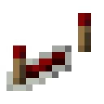
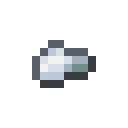
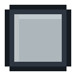

The Bench and the Fabricator
Every machine is made in a Fabricator. The simple ones need nothing but materials. The rest need a Blank Photomask carrying a design for what they compute, and designs are wired on a Bench from the smallest operations there are.
 Crafting
Crafting



 Crafting
Crafting


 Crafting (Shapeless)
Crafting (Shapeless)

 Crafting (Shapeless)
Crafting (Shapeless)

Specs
The Bench lists specs: what a module must compute, a formula, and a set of test cases with the answers worked out exactly. Some cases are ordinary. Others are the inputs that break the obvious design: scores of a thousand, a row of equal numbers, numbers far from zero. A design passes when it gets every case right to within a thousandth.
Specs build on each other. Attention needs your softmax and matrix multiply; the transformer block needs layer norm, attention and the feed-forward block. A spec opens when the ones it builds on are verified.
Wiring a design
Drag parts from the left onto the board, and drag from one node's right edge to another's left edge to wire them. Every node shows a strip of the numbers it computes on the chosen case; click it to read them. A strip turning red means a value that is not a number, and the node that turned it red is the one to look at. Wire your last node into result, and the cases on the right tell you which pass and why the others don't.
The parts:
- Sources: a constant you type, and size, the length of the last axis.
- Arithmetic: add, sub, mul, div and max, element by element. An axis of size 1 stretches to match the other input, so a row of sums divides a whole row of numbers.
- Functions: neg, exp, log, sqrt and tanh.
- Last axis: sum and amax keep the axis with size 1; transpose swaps the last two axes; unsqueeze and squeeze add and drop an axis of size 1; causal hides everything above the diagonal.
- Your modules: every spec you have verified, as one part.
Recording
When every case passes, Record to photomask writes the design onto a blank photomask from your inventory, signed with your name. The spec counts as verified for you from then on, and its module joins your parts on every Bench.
Fabricating
Put a photomask in the Fabricator and pick a machine. Each takes a Tensor Casing, wafers, and weight crystals if it learns weights. A design's area sets the wafers: four units of area to a wafer. Each primitive costs a little area and each module what its spec's design costs, so a smaller design makes cheaper machines. The photomask is never used up.
Without a mask, the Fabricator makes the machines that need no design: the embedding and position tables, the residual junction, the gate, the scaler, the causal mask, the head splitter and merger, the delay line and the concatenator. A matrix multiply photomask also makes the Training Accelerator.
Fused and unfused
The ruins hold old photomasks too, carrying salvaged designs: correct, but written out one primitive at a time. Machines made from them are unfused. They give the same answers, but they write out every tensor in between, so they use more memory and train more slowly. A design you verify yourself makes fused machines, one kernel each. The machine's screen and tooltip say which it is.
Glass PaneRedstone RepeaterTensor CasingCrafting TableIron IngotBenchLanternGlassPistonFurnaceFabricatorSandRedstone DustWaferIron NuggetBlank Photomask